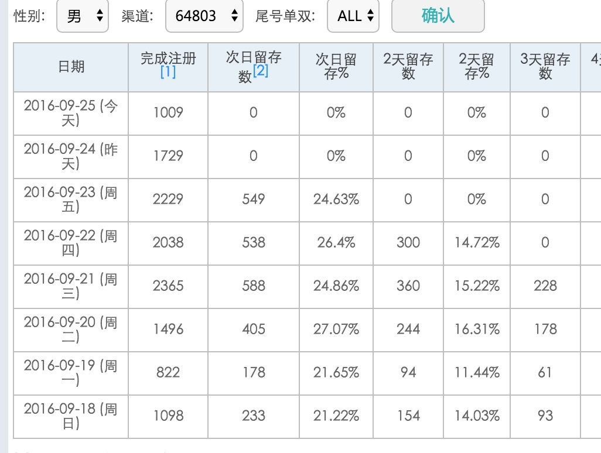
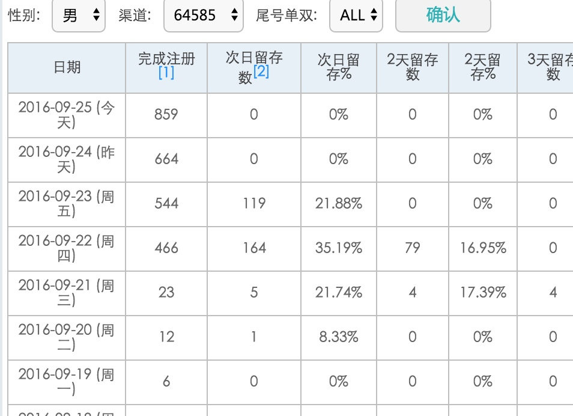

本周工作简报
本周工作主要由以下几点构成：
本周进入了冲刺阶段的第一周，全员试行了996上班制度，团队气氛高涨。
【核心生态女】：拍拖产品还是继续在进行生态女的效率提升工作，从本周的情况来看，核心生态女扩充到15人的规模，但通过偶遇模块的生态效果没有达到预期目标，下周将继续调优生态女与策略的配合节奏。路径已经研讨过很多遍，有待实施来检验结果。调度系统已经完成，稍微有些耐心，经过一段时间的调试应该可以达到预期。
【基础策略】：基础策略的后续登陆的优化正在进行中，目前的效果与多名称基本还是持平。
营销中心已经搭建按成验收环境，放量工作基本准备就绪。
iOS已经输出了第一期有缘网品牌版方案，相关人员已经进行了第一轮讨论。
微信版本第一期方案已经输出，下周将会进行方案讨论。
HRBP刘林入职一周，就这一周的表现来看，和团队的融合已经完成，通过周五与老板的沟通，我和刘林达成了近一周的两个任务，一是将思想同我能保持在一个频道，理清公司，婚恋业务，商业化中心的战略逻辑和框架，下周全面了解新产品的战略部署；二是对核心成员进行全方位的评价，以周报的形式汇报，下周开始周报同时抄送给田总，董总（抄送给董总主要是提高其重视程度，让其慎重对待每一次和boss沟通的机会）。
下周主要工作：
- 输出视频承载形式能否大幅度提升交友预期从而进行转换的初步结论；
- 核心生态女的第一期目标完成 （arpu1能提升至2.5）
- 微信产品方案确定
- 刘林的进一步磨合
几组数据分享：
在引入了核心生态女以后，次日回访还是有比较明显的提升：
应用宝渠道：

广点通渠道（还有待观察）：

以下为各模块具体情况：
整个思考框架分为三个层面： 核心生态层 + 多产品应用层 + 平台运营层
核心生态层
任务C1：基础策略 （王楠负责）
基础策略在规定强度的基础上对用户转化率的提升
目前从策略的调优、内容的运用、用户使用逻辑和回访四个点继续调优中。
产出主要从任务P2中体现；
任务C2：核心趋利（程远炜负责 赵安庆、耿伟为将）
对分配的流量转化效率最大化
保证售后服务
对于分配流量转化效率最大化主要由两块决定：
- 核心生态女的规模和工作效率 （通过提供工具和激励方案搞定）
- 分配的流量质量是否最利于核心生态女转化
进度
本周已经引入多名女性用户开始测试；
补贴期激励政策确定为： 每单提成 = 客单价 * 20% +30（补贴），以后按月确定补贴价格
目前有10个核心生态女在工作
任务C3： 自然交友 + 自然趋利（徐文涛负责）
女性用户基础体验
产出内容，贡献交互行为
自然女的留存、内容产出及交互行为
定向引入自然女
核心亮点功能： 女性用户的最低成本上传优质内容 做到行业最领先水平 （产品中体现）
10底前的主要任务确定为 女用户内容产出。
已经围绕以下几个方向进行中：
- 女用户侧基础体验优化
- 针对女用户的匹配推荐方案
- 女用户视频引导和发布
- iOS测试包发布。
任务C4：分流匹配 （吕思明负责）
通过流量有效分配，最大化男用户转化效率
这个是核心生态的核心，旨在给男用户打标签从而匹配给合适的服务对象。 上周刚刚将这一层抽象出来。
以下会从以下几个方面进行：
对于基础策略的包装，通过任务方式过滤用户，让符合条件的用户撞基础策略或核心生态女。
任务C5： VIP服务 （暂无负责人）
会员价值服务兑现
增值服务
会员价值服务兑现先通过核心驱利女激励机制进行简单考虑，稍微往后放一放。
目前有几个方向：
1、 持续的交流聊天
2、 视频社区
3、 同直播结合
这一块还在进一步的思考，核心生态女没建立起来，无法对生态女收入导向进行预估。
产品应用层
任务P1 拍拖项目 （严欣负责）
短视频内容+ 分流匹配
核心生态验证任务
目前主要对接机芯生态的基础策略和核心趋利模块功能。
产品亮点为不断深化女性用户低成本上传优质内容的功能。
任务P2 绝配项目 （杨华负责）
基础策略 + 直接趋利对接
简化核心生态验证任务
当前进度9月15日打平对标恋爱神器，9月30日会有较大幅度提升，150%+。 （反复同王楠确认过，他认为有80%把握）
平台运营层
任务O1 微信 （马占潮负责）
符合微信生态标准的产品
盈利能力高于老产品
在微信新产品上，着力解决以下三个问题：
- 付费用户聊得上 （主要从 匹配策略上倾斜生态女，同时控制投诉率）
- 消息接口 与同微信沟通过，强度没问题
- 被动消息每天一次
- 召回消息每月4次
- K值提升
- 内容承载上以短视频为主
- 变广度为深度
- 变策略为真人交互
进度：
任务O2 iOS （杨华负责）
目前刚把任务界定，具体还没有和广志沟通。